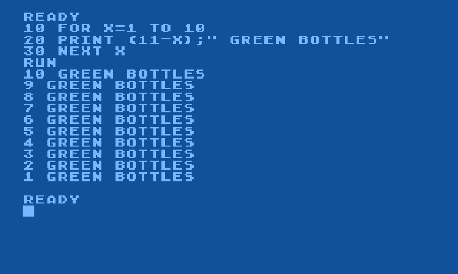
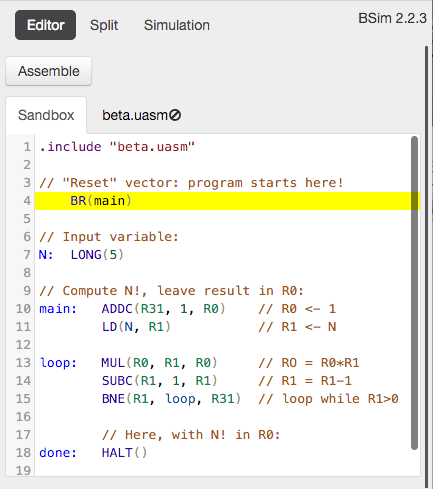
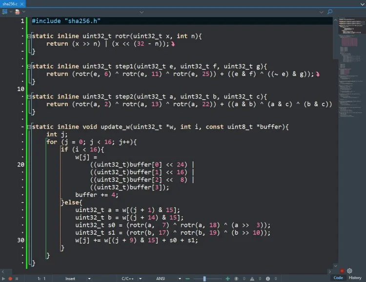
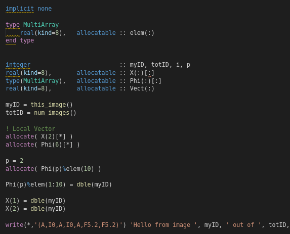
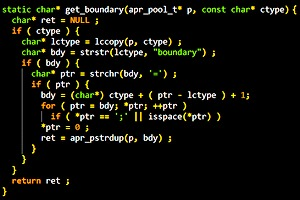
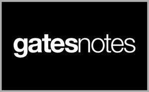
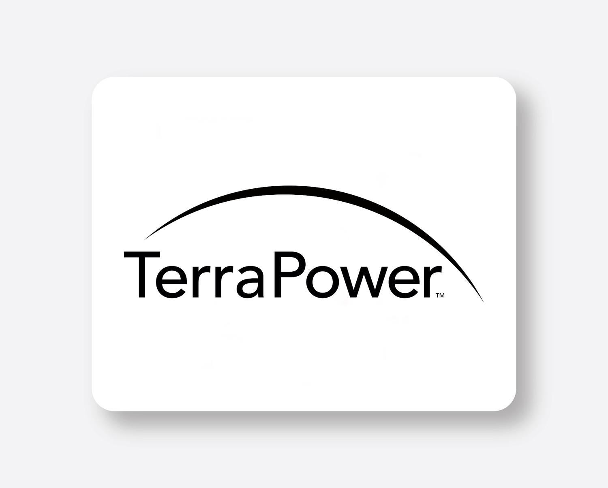

Bemutatkozás
Bill Gates amerikai üzletember, programozó és filantróp. 1955. október 28-án született Seattle-ben. Paul Allennel együtt alapította a Microsoftot, amely a világ egyik legsikeresebb technológiai vállalatává vált. Később a jótékonykodásra is nagy figyelmet fordított, és számos egészségügyi, oktatási és környezetvédelmi kezdeményezést támogatott.

Készségek
BASIC

Assembly

C

Fortran

C++

Pascal

Projektek
Gates Notes
Bill Gates saját weboldala/projektje, ahol könyvekről, technológiáról, egészségügyről, klímaváltozásról és különböző globális problémákról osztja meg gondolatait és kutatásait.

Breakthrough Energy
Gates által létrehozott kezdeményezés, amely olyan technológiákat támogat, amelyek segíthetnek a klímaváltozás elleni küzdelemben, például tiszta energia és szén-dioxid-kibocsátás csökkentése.

TerraPower
Bill Gates által 2008-ban alapított vállalat, amely új generációs, biztonságosabb és tisztább atomreaktorokat fejleszt.

Kapcsolatok
📧Email:bill_gates@gmail.com
☎Tel: +1 206 709 3400
🏠Lakhely: Seattle, Washington, USA